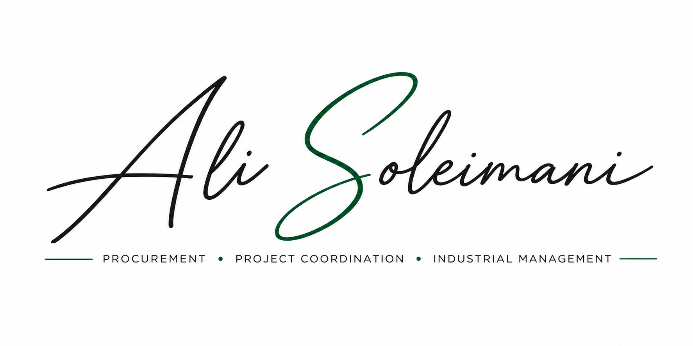

Aktuelles StudiumM.A. International ManagementHochschule Fresenius · Köln
BEWERBUNG • HONORARDOZENT
Praxis trifft Hochschullehre.
M.A.-Student an der Hochschule Fresenius in Köln mit 10+ Jahren Praxis in Projektmanagement, Einkauf, Supply Chain und internationalem Industriegeschäft — mit besonderem Fokus auf praxisorientierte Lehre.
BEWERBUNGSFOKUSHonorardozent (m/w/d) · Wirtschaft & MedienKöln · Projektmanagement · Supply Chain · Logistik · International Management
Aktueller Notendurchschnitt1.2Aktueller Notendurchschnitt
StandortKöln · DeutschlandAktuell in Köln · Hochschule Fresenius
Berufserfahrung10+ yearsProjektmanagement, Einkauf & Industrie
FACHGEBIETE
International ManagementProject ManagementSupply ChainProcurementBusiness AnalyticsResearch

Interesse an Lehraufträgen in KölnPraxisorientierte Lehre · Wirtschaft · Management · Supply Chain
10+Jahre Berufserfahrung
€10M+Betreutes Einkaufsvolumen
30+Internationale Lieferanten
1.2Aktueller M.A.-Notenschnitt
C1Englisch · TOEFL 101
A2Deutsch · laufende Verbesserung
BERUFSERFAHRUNG & STUDIUM
Die berufliche Praxis hinter dem Lehrprofil.
Mar 2026 — heute
AKTUELLE BERUFLICHE PRAXIS
Commercial Consultant
Petro Sanat Lidoma Engineering Services (PSL) · Cologne, Germany
Mar 2026 — heute
AKTUELLES STUDIUM
M.A. International Management
Hochschule Fresenius · Cologne · Project Management, Supply Chain, Data Analysis & Strategic Management
Dec 2017 — Feb 2026
EINKAUF · LEITUNG
Procurement Manager & Executive Coordinator
Petro Sanat Lidoma Engineering Services (PSL) · Tehran, Iran
Jun 2016 — Nov 2017
EINKAUF
Procurement Specialist
Petro Sanat Lidoma Engineering Services (PSL) · Tehran, Iran
Jan 2016 — May 2016
FORSCHUNG
Research Assistant
Iran University of Science and Technology (IUST) · Tehran, Iran
ANFORDERUNGEN
Stellenanforderungen transparent mit meinem Profil verglichen.
| Anforderung | Mein Profil | Fit |
|---|---|---|
| Abgeschlossene Hochschulausbildung im vertretenen Fachgebiet | M.Sc. Chemieingenieurwesen abgeschlossen; M.A. International Management läuft. Für ausgewählte praxisorientierte Module gute fachliche Nähe, aber kein abgeschlossenes Studium in BWL/Management. | TEILWEISE |
| Idealerweise Promotion | Keine Promotion. | LÜCKE |
| Lehrerfahrung | Als Research Assistant Durchführung von Excel-Training für Studierende; keine umfangreiche Hochschullehrerfahrung dokumentiert. | BEGRENZT |
| Projektmanagement | 10+ Jahre Projektkoordination und EPC-Projektabwicklung. | STARK |
| Supply Chain Management | 10+ Jahre Einkauf, Lieferantenmanagement, Beschaffung und Logistikkoordination. | STARK |
| Logistik | Lieferverfolgung, Versanddokumentation, INCOTERMS, Inspektion und Lieferantenkoordination. | STARK |
| International & Global Management | Laufendes M.A. International Management plus internationale Lieferanten- und Stakeholdererfahrung. | STARK |
| Business Analytics / Communication | Advanced Excel, KPI-Reporting, Einkaufsanalysen und Managementkommunikation. | GUT |
| Forschungsmethoden / Empirische Studien | Aktuelle Research-Methodology-Studien, Forschungserfahrung und Publikation. | GUT |
| Deutsch als Fremdsprache | Deutsch A2; derzeit kein geeignetes Lehrgebiet. | NICHT PASSEND |
Wichtiger Punkt: Für die Bewerbung sollte die fachliche Passung klar auf die konkreten Module begrenzt werden. Eine Bewerbung als allgemeiner Honorardozent für alle Themen der Ausschreibung wäre aus meiner Sicht zu breit.
LEHRPROFIL
Was ich in die Lehre einbringen kann.
Praxis & Fallbeispiele
EPC, Einkauf, Lieferantenverhandlungen, Supply Chain, Projektkoordination, internationale Geschäftsbeziehungen und Prozessverbesserung.
Analytik & Struktur
Advanced Excel, KPI-Reporting, kommerzielle Analysen, Research Methodology und strukturierte Dokumentation.
Internationale Perspektive
Englisch C1, internationale Lieferanten in Europa und Asien sowie laufendes Studium International Management in Köln.
KONTAKT
Bereit, Berufspraxis in den Hörsaal zu bringen.
Diese Seite ist auf die Honorardozenten-Ausschreibung der Hochschule Fresenius in Köln zugeschnitten. Die Bewerbung sollte insbesondere Projektmanagement, Supply Chain, Logistik, International Management und Business Analytics hervorheben.
Emailalisoleimani71@gmail.comDirekt Kontakt aufnehmen
↗
LinkedInlinkedin.com/in/alisoleimani-deBerufliches Profil
↗
STELLENAUSSCHREIBUNGHonorardozenten · Wirtschaft & MedienHochschule Fresenius · Köln
↗
